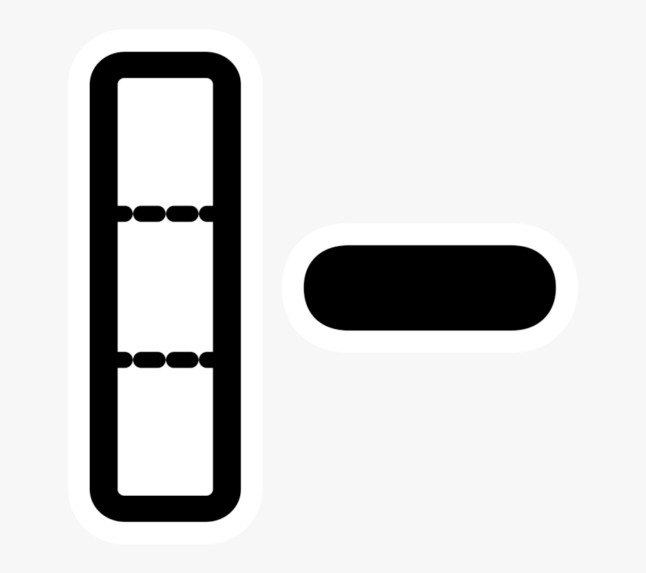
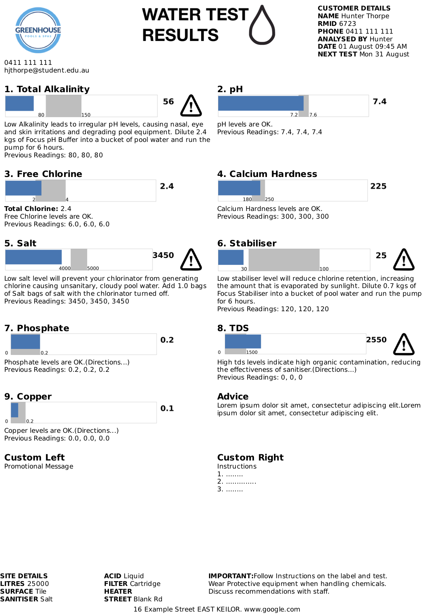
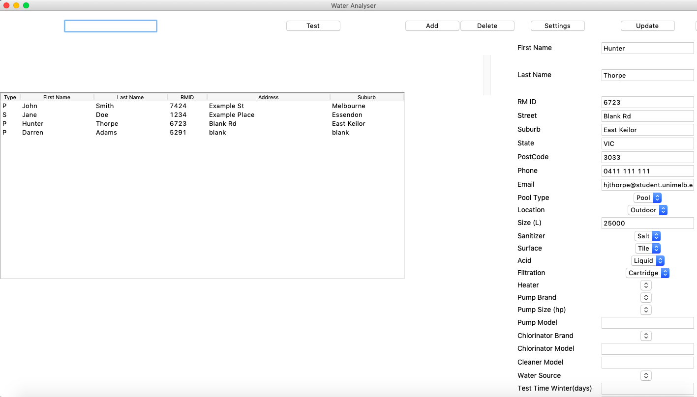
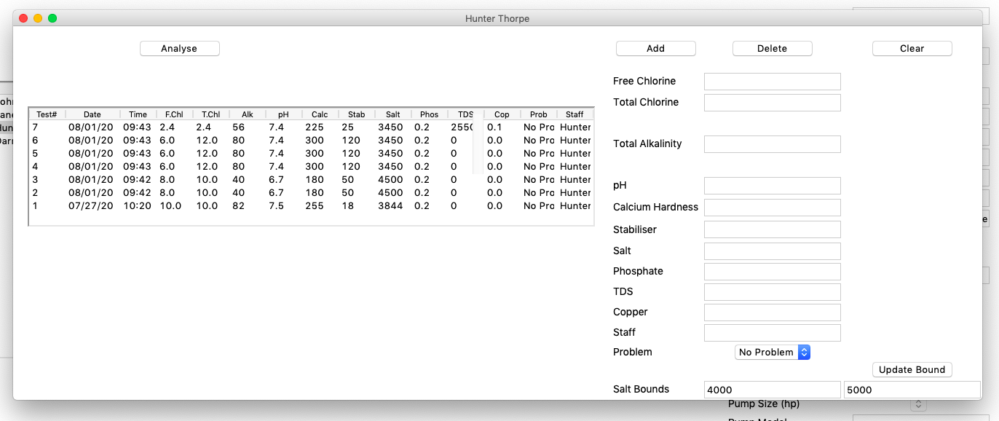

Projects
Comparing Classifiers
Comparing classification algorithms and feature engineering/selection using
World Development Indicators and life expectancy data from the World Health Organization.
Libraries Used: Pandas, Numpy, sklearn, Statistics
Tennis webscraper
Python script used to scrap information from a series of articles
describing tennis matches and use the data to prepare a relevant report with graphics created
via matplotlib.
Libraries used: json, Beatiful Soup, numpy, re, matplotlib

Comparing Classifiers
Part 1
- Perform median imputation and scaling on each feature
- Comparing classifaction accuracies between models trained with a 10 Nearest Neighbour, 5 Nearest Neighbour, and Decision Tree Classifer
Part 2
- Performing different methods of feature selection and engineering, including Kmeans clustering
- Comparing relevant accuracies
See more at github.com/hunterthorpe/comparing_classifiers
Tennis Webscraper
- Script scrapes a web server at http://comp20008-jh.eng.unimelb.edu.au:9889/main/ containing a number of reports on Tennis matches.
- Script also gathers player data from a JSON data file containing player names and key statistics.
- Task 1: Crawl the site and create a list of complete articles. Use this to create a csv file that lists article headings and their urls
- Task 2: Use regular expressions to find which players are featured in the article the score of the match in question. Produces a csv file containing the URL, headline, first player mentioned and first complete match score.
- Task 3: Calculate average game difference for each player and output this to a csv file.
- Task 4: Using Matplotlib to generate a suitable plot showing five players that articles are most frequently written about and the number of times an article is written about that player.
- Task 5: Using Matplotlib to generate a suitable plot showing the average game difference for each player that at least one article has been written about and their win percentage.
See more at github.com/hunterthorpe/article_webscraper
Water Analyser
- Manage and record customer’s details and test history via csv files
- Create, read, update, delete and search functionality
- Creates an informative test printout based on test results using html and css
- Written in Python using the Tkkinter library

Hash Table and Trie Implementations
Linear probing hash table implementation and character level trie implementation in C.
Other Projects
- Deque and Topological sort implementation
- Text formatting C program
- Path finding C program
- And more
Water Analyser
The program involves two windows for the user to interface with: an initial window that displays all of the customers in the database and their associted information, and a water testing gui that is specific to each customer that displays their test history. Upon analysing a given test result, the program generates a html file that can be printed from a browser as a single page, displaying the readings in a graphical format, any required chemicals and any associated instructions.



Hash Table and Trie Implementations
The hashing function used reads in a file containing a number of strings between 1 and 256 characters long, that contain
lowercase letters, uppercase letters, and digits. The hash value is computed by converting each character to a binary string,
cocatenating them and taking the mod of this number. Due to the length of some strings I implented Horner's rule.
The hash table uses linear probing and rehashing if an element cannot be stored in the hash table.
The trie implementation is used to analyse the frequencies of certain prefixes and perform certain compuations with this data.
See more at github.com/hunterthorpe/hashtable_and_character_trie
Papers and Articles
Future Impact of Artificial Intelligence
A short discussion of the nature and impact of Artifical Intelligence in current and future times.
Macquarie Bank Analysis
A review of the effect of Michael Porter's competitive strategy on the Macquarie Group's business and information systems.
Resume
Profile
Enthusiastic and motivated 2nd year Bachelor of Science student at the University of Melbourne preparing to double major in Data Science, and Computing and Software Systems.
Education
The University of Melbourne – Bachelor of Science (2nd Year) .
- Weighted Average Mark (WAM): 78.00
- First Class Honors: Elements of Data Processing, Foundations of Computing, and Calculus 1
- Second Class Honors: Foundations of Algorithms, Design of Algorithms, Foundations of Information Systems, and Probability for Statistics
- Member of the Competitive Programming and Information Security Clubs
- Click Here for Statement of results
St Bernard’s College – VCE: 94.95 ATAR
Experience
Greenhouse Pools and Spas: Sales Assistant. Dec 2018 – Current (20 months)
- Responsible for water testing, data entry and management, making sales, store organization, and general admin
- Developed Pool water testing and customer database program in an attempt to replace a previously used dated software
- References: Store Directors- Fabio Marzella (fabiom@ghpools.com.au), and Merita Marzella (meritam@ghpools.com.au)
Mathstar Tutoring: Mathematics and English Tutor. Apr 2019 – Sep 2019 (6 months)
- Tutored at a primary school and secondary school level
- Reference: Manager- Sheryn Chen (info@mathstar.com.au)
McDonald’s Highpoint Kitchen Staff – 2016 Nov - 2018 Jan (14 months)
- Excelled in a high pressure team environment
Walter and Eliza Hall Institute Work Experience- June 2016 (1 month)
- Responsible for data entry, operating certain technical equipment and preparing a relevant report
NWMCA and EDFL Umpiring- Apr 2015 – Feb 2017 (22 months)
- Officiated a variety of junior and senior, football and cricket matches
- Developed skills in communication, decision making, cash handling and teamwork
Skills
Languages
- Python
- C
- HTML and CSS
- Java
- Javascript
- SQL
- R
Frameworks and Systems
- Boostrap
- Git
- Bash
Software Packages
- Matlab
- Maple
- Microsoft Office
- Google's Office Tools
Extracurricular Activities
- Volunteer tutor at St Alban Community Centre 2017 (2 months)
- DAV and ACC interschool debating 2014-2017 (3 years)
Personal Attributes
- Hard working
- Fas and Willing Learner
- Dedicated Team Member
- Great Communicator
- Punctual
- Organized
- Leadership Skills
- Attention to Detail